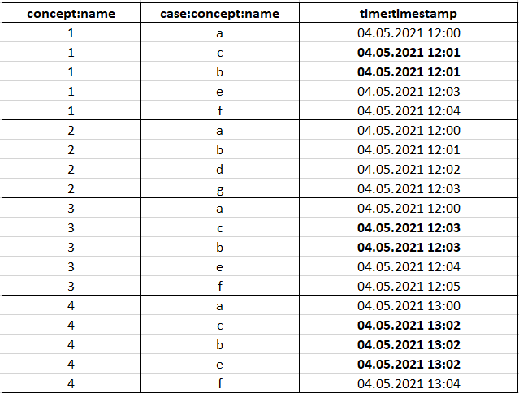
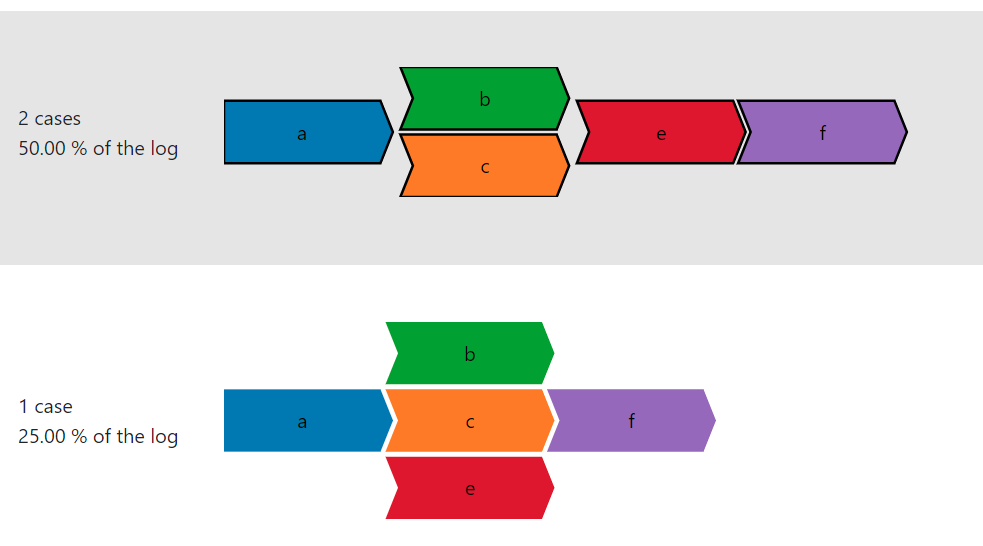

What is a Partial Order Group?
A
partial order group is a group that consists of all the traces of the
event log which have the same set of activities in a particular sequence (ordering) and also
have the same activities which cause the order to be partial orders.
A
partial order is a trace that contains two or more activities with the same time
stamps
causing the exact ordering of the activities to be indeterminable.
Visual Definition:
If an activity
'A' is followed by
'B' in the
visualization, it means
'B' occurred
after 'A'. The ordering of
activities that do not cause the trace to become a partial order is retained as it is. The
activities that have the same time stamps and hence cause the trace to become a partial order
are
stacked on top of each other, since an ordering cannot be decided. A
partial order group
contains all such traces that have the same activities.
- Example:
Consider the following event log in a table:

Note: The timestamps indicated in bold are same and hence the corresponding
activities will cause partial orders.
- concept:name = case_id
- case:concept:name = activity
- time:timestamps = timestamp
The generated partial order groups are as follows:

Note: We use the chevron style representation for visualizing these activities (shape of the
activities).
As seen from the figure above, we have two partial order groups. Also, notice on the left the
statistics of the traces contained in the group, which gives information on the number of
traces and percentage of traces in the event log. We also notice that we have only 3 cases
displayed, as obviously case_id 2 is not a partial order as all activities have
unique timestamps.
In the first case we have 2 traces, case_id 1 and 3, clubbed into one partial order
group since they both have:
- Same set of activities.
- All activities except the ones causing partial orders have the same ordering.
- The activities causing partial order are the same.
The activities
a,
e, and,
f have different time stamps and hence their
ordering
is retained. The activities
b and
c have equal time stamps causing a partial
order.
These activities are therefore stacked on top of each other.
Further Steps:
Each partial order group is selectable (grey color appears when hovered on the group; can be
seen in
the figure). Selecting a group will automatically redirect the application to the
Combinations tab, which displays all possible combinations in which the activities can be
ordered to convert the partial orders to complete orders.